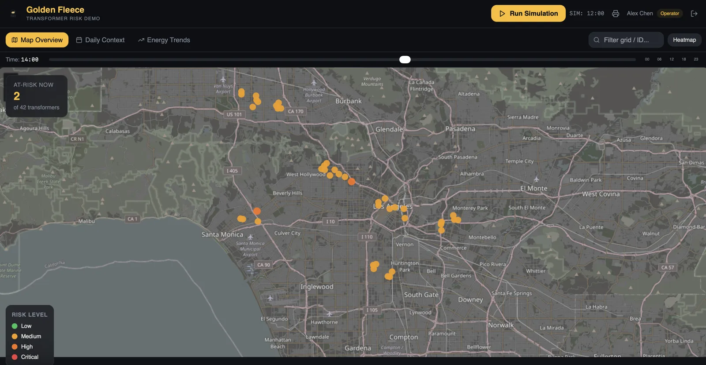

Risk dashboard
Inspect by exception, not by schedule.
Units running hot rise to the top, with the load and weather behind the score. Crews visit the ones that need it.

Screenshots of our demo. All data is synthetic.
01
Spot
A risk score out of 100 for every monitored unit.
02
Decide
Send a truck to the units that need it, and skip the rest.
03
Confirm
With the jacket's sensors (planned), see whether the wax is solid, melting or used up.
Pilot Golden Fleece with us.
We are looking for a utility or city partner to test the jacket and dashboard on a small group of transformers.
Become a pilot partner